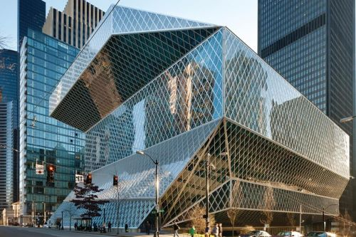

Crossroads Architecture este un birou de arhitectură fondat în 2001 cu sediul în Brașov care realizează proiecte pentru construcții rezidențiale, comerciale dar și de restaurare a clădirilor istorice. Echipa noastră tânără și dinamică de arhitecți are o vastă experiență și pregătire în țări precum Marea Britanie, Austria și Italia.
Firma noastră se cracterizează prin creativitate, entuziasm și responsabilitate. Întâmpinăm fiecare proiect cu studii aprofundate și implicare totală din partea membrilor echipei noastre. Credem că colaborarea strânsă dintre aceștia și clienții noștri este esențială pentru a obține cele mai bune rezultate. Pentru noi, intrebarile potrivite adresate clienților în momentul consilierii, sunt primul pas către găsirea celor mai bune răspunsuri. Echipa noastra colaboreaza activ cu experti din toate domeniile conexe, pentru a identifica si dezvolta intregul potential al proiectului, de la primele studii si pana la executia proiectului.

Scopul nostru este de a dezvolta o arhitectura care afecteaza in mod pozitiv societatea, din punct de vedere arhitectural, ecologic si social.Filosofia noastra in design este aceea de a evita procesele liniare de dezvoltare si de a creea ecosisteme arhitecturale, ce raspund nu numai nevoilor curente dar si celor viitoare. Astfel, garantam solutii practice, durabile si eficiente din punct de vedere al costurilor, conforme cerintelor pietei de arhitectura nationala si internationala.
Suntem ferm convinși că singurul mod de a evolua este de a cotinua procesul de învățare și de aceea îi încurajăm pe membrii echipei noastre să se implice în cât mai multe proiecte inter-disciplinare, să participe la conferințe unde pot învăța de la cei mai buni arhitecți ai lumii, și de a se inspira din modelele arhitecturale apreciate de-a lungul istoriei dar și din cele actuale. De-a lungul anilor am vizitat:
- Londra
- Venetia
- Amsterdam
- Munchen
- Valencia
și am luat parte la cele mai importante conferințe și târguri de arhitectură din lume:
- Bienala de arhitectura din Venetia
- ArchiBau Munchen
- EcoBuild Londra
- London Build Expo
- London Design Festival
- Open House London
- Long Night of Architecture Munchen
- Targul international de mobilier din Milano
În concluzie, lăsăm numerele să vorbească pentru noi
Statistici
Proiecte în peste 20 de țări din toată lumea
Peste 25 987 564 m2 construiți
65 de premii și nominalizări
134 de clienți
182 de proiecte